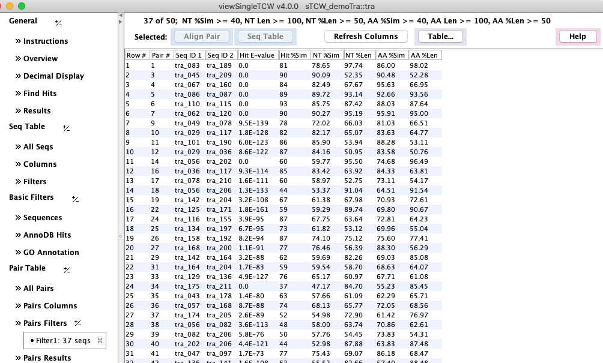
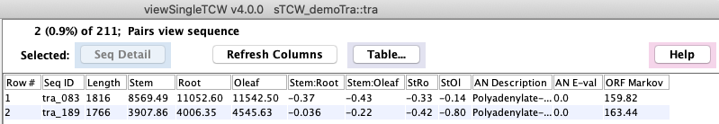

Similar Pairs
In runSingleTCW, there is an annotation option to compare all sequences.
If this has been run, then there will be a Similar Pairs section.

The Hit E-value and Hit %Sim are from the blast (or diamond) hit file,
the rest of the numeric columns are from dynamic programming
alignment of the pair.
Select a row followed by Align Selected Pair to view the nucleotide and amino acid alignment using
the best frame.

Select a row followed by View Sequence and the sequences will be shown in the main Sequence Table.
